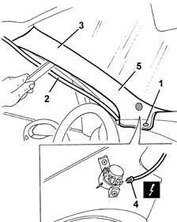
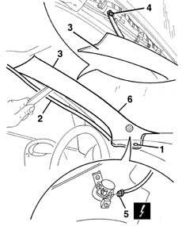

7040H30 front pillar trim - r r
- Path
- Procedures > 70 FITTINGS > 7040 BODYSHELL INTERIOR TRIMS AND FITTINGS > 7040H roof panel lining > 7040H30 front pillar trim - r r
- Kind
- repair procedure (removal / refitting; the operation number is the code)
- Applies to
- all engines; all production periods
- Interactive page
- https://sloeber94.github.io/elrnDB-fMltpl/en/#/2892198
Applies to: all engines; all production periods
 Removing
Removing
 Refitting
Refitting7040A96 facia glove compartment flap (1) lh or rh - r r
5580C26 LOCK BARREL KEY/SWITCH for deactivating passenger 'AIR BAG - R.R.
7040A44 facia lh side cover - r r
1. Undo the retaining button using the special tool
 | Name | Country |
|---|---|---|
1 | Scraper blade | 1.878.077.000 |
2. Remove the perimetral seal on the door frame near the front pillar trim.
3. Disengage the pillar trim from the retainers using the special tool and move it aside slightly.
| Name | Country |
|---|---|---|
2 | Scraper blade | 1.878.077.000 |
4. Disconnect the electrical connection for the tweeter.
 | Name | Connector |
|---|---|---|
4 | Left tweeter speaker |
| Name | Connector |
|---|---|---|
4 | Right tweeter speaker |
5. Keep the front pillar trim.

Applies to: all engines; all production periods
Refitting
RemovingEngage the bottom retainer of the pillar trim.
Connect the electrical connection for the tweeter.
Engage the pillar trim on the retainers.
Fit the retaining button in place.
Fit the sealing strip around the door compartment.
7040A44 facia lh side cover - r r
5580C26 LOCK BARREL KEY/SWITCH for deactivating passenger 'AIR BAG - R.R.
Applies to: all engines; all production periods; only with equipment: Head-bag
Removing
Refitting7040A96 facia glove compartment flap (1) lh or rh - r r
5580C26 LOCK BARREL KEY/SWITCH for deactivating passenger 'AIR BAG - R.R.
7040A44 facia lh side cover - r r
7040A45 facia rh side cover - r r (For the right pillar only)
1. Undo the retaining button using the special tool
| Name | Country |
|---|---|---|
1 | Scraper blade | 1.878.077.000 |
2. Remove the perimetral seal on the door frame near the front pillar trim.
3. Disengage the pillar trim from the retainers using the special tool and move it aside slightly.
| Name | Country |
|---|---|---|
3 | Scraper blade | 1.878.077.000 |
4. Disconnect the bolt fixing the retaining band.
5. Disconnect the electrical connection for the tweeter.
| Name | Connector |
|---|---|---|
5 | Left tweeter speaker |
| Name | Connector |
|---|---|---|
5 | Right tweeter speaker |
6. Keep the front pillar trim.

Applies to: all engines; all production periods; only with equipment: Head-bag
Refitting
RemovingCheck that the cover is undamaged.
Connect the electrical connection for the tweeter.
Position the retaining band and secure it using the bolt.
Engage the pillar trim on the retainers.
Fit the retaining button in place.
Fit the sealing strip around the door compartment.
7040A45 facia rh side cover - r r (for the right pillar only)
7040A44 facia lh side cover - r r
5580C26 LOCK BARREL KEY/SWITCH for deactivating passenger 'AIR BAG - R.R.
Topics linked from this page (7)
- 5580C26 LOCK BARREL KEY/SWITCH for deactivating passenger 'AIR BAG - R.R.
- 7040A37 fuse box cover - r r
- 7040A44 facia lh side cover - r r
- 7040A45 facia rh side cover - r r
- 7040A96 facia glove compartment flap (1) lh or rh - r r
- P45 Left tweeter speaker
- P46 Right tweeter speaker
Topics that link to this page (18)
- 5010B08 VENTILATION SYSTEM OUTSIDE AIR PURIFYING FILTER (ANTIPOLLEN) - R+R
- 5050B38 WINDSCREEN WIPER ASSEMBLY - R+R OR REPAIR
- 5050B42 WINDSCREEN WIPER MOTOR - R+R
- 5505C30 under-facia wiring - r r
- 5505C31 under-facia wiring - r r
- 5505C41 cabin wiring - r r
- 5570T92 front tweeter - r r
- 5580M80 on-board navigator system wiring harness - r r
- 7030B06 sliding rooves (assemblies) - r r
- 7030B11 sliding roof(assembly, 1 front or rear - r r )
- 7030B20 sliding roof glass front or rear - r r
- 7030B23 MOULDING/SUPPORT seal for SLIDING ROOF GLASS PANEL, Front or Rear - R.R.
- 7030B24 sliding roof blind,front or rear - r r
- 7035A14 OUTER WINDSCREEN MOULDING - R R
- 7035A18 WINDSCREEN GLASS R R INCLUDING CLEANING OF HOUSING
- 7040H10 roof panel lining - r r
- 7040H16 roof panel lining - r r
- 7055A20 FRONT TRIM under WINDSCREEN with main beam headlamps - R.R.